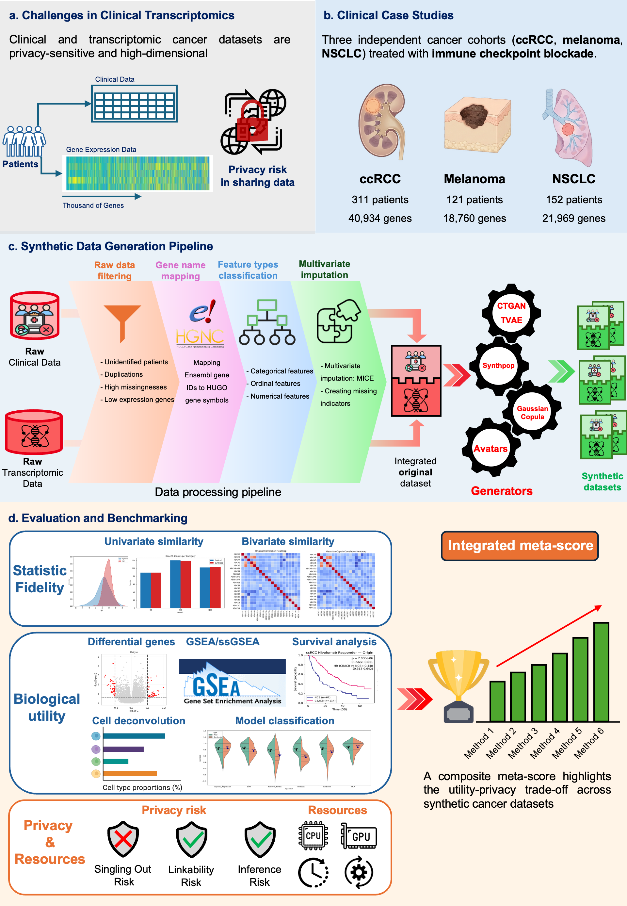

SynOmicsBench: A unified benchmark of synthetic data generation for clinical and transcriptomic cancer data¶
Welcome to the SynOmicsBench documentation. This project provides a comprehensive framework for the generation, evaluation, and benchmarking of synthetic clinical and transcriptomic data in the context of precision oncology.
Abstract¶
Achieving a trade-off between biological utility and patient privacy remains a key challenge for secure data sharing when applying transcriptomic clinical datasets to artificial intelligence in precision oncology. Here, we introduce the first benchmarking study tailored to high-dimensional clinical transcriptomic cancer data, comparing synthetic data generation methods across three clinical cancer trials. Our framework, SynOmicsBench, combines standardized preprocessing with multidimensional evaluation, prioritizing downstream biological validation alongside statistical fidelity and attack-based privacy assessment. Results indicate that no single method dominated all dimensions, with Gaussian Copula achieving the most balanced performance, followed by Avatar, demonstrating that metric-based similarity alone is insufficient to ensure preservation of higher-order molecular dependencies. Synthetic data consistently reproduced biomedical signal directionality but with attenuated effect sizes and inter-replicate variability, supporting hypothesis generation when multi-seed synthesis is adopted. Collectively, this framework provides a reproducible decision-support tool for method selection and promotes biologically informed, privacy-aware adoption of synthetic data in precision oncology.
Framework Overview¶

Figure 1: Overview of the SynOmicsBench benchmarking protocol. (a) Data sensitivity and high-dimensionality of clinical-transcriptomic profiles. (b) Case studies across three cancer types (ccRCC, Melanoma, NSCLC). (c) Standardized generation pipeline. (d) Multidimensional evaluation framework covering Statistical Fidelity, Biological Utility, and Privacy Risk.
The SynOmicsBench pipeline combines standardized preprocessing with a multidimensional evaluation suite, prioritizing downstream biological validation alongside statistical fidelity and attack-based privacy assessment.
Benchmarked Datasets¶
SynOmicsBench utilizes three diverse cancer cohorts treated with immune checkpoint blockade (ICB), reflecting realistic heterogeneity in sample size and transcriptomic dimensionality (Figure 1b).
Table 1: Overview of benchmarked cancer datasets.
| Dataset characteristic | Sub-category | ccRCC | Melanoma | NSCLC |
|---|---|---|---|---|
| Number of patients | 311 | 121 | 152 | |
| Number of clinical features | 52 | 47 | 14 | |
| Number of transcriptomics features | 40,934 | 18,760 | 21,969 | |
| Gene expression level | Transcripts Per Kilobase Million (TPM) | TPM | TPM | |
| Age (year), median (range) | 63 (30-88) | — | 64 (40-89) | |
| Sex | Male | 229 | 71 | 87 |
| Female | 82 | 50 | 65 | |
| Clinical outcomes | Partial Response/Complete Response (PR/CR) | 44 | 47 | 60 |
| Progressive Disease (PD) | 106 | 56 | 50 | |
| Stable Disease (SD) | 131 | 16 | 42 | |
| Others | 30 | 2 | 0 | |
| Study source | Braun et al. (2020) | Liu et al. (2019) | Ravi et al. (2023) |
Synthetic Data Generation (SDG) Pipeline¶
As illustrated in Figure 1c, clinical and transcriptomic data were harmonized and integrated through a standardized data processing pipeline. This process ensured consistency and compatibility across SDG methods. The processed dataset was subsequently used to train SDG models (Gaussian Copula, CTGAN, TVAE, Synthpop and Avatars (K5/K10)), which generated patient-level synthetic multimodal datasets.
Evaluation Pillars¶
SynOmicsBench evaluates synthetic data through three primary lenses (Figure 1d):
1.Statistical Fidelity¶
Validates the preservation of global statistical properties by comparing:
- Univariate Similarity: Marginal distributions of individual attributes.
- Bivariate Similarity: Inter-variable relationships and correlation structures.
2. Biological Utility (Biological Signal)¶
Evaluates task-specific performance in clinically relevant downstream analyses:
- Differential Gene Expression (DGE): Preservation of fold-changes and p-values of gene expression.
- Gene Set Enrichment (GSEA/ssGSEA): Recovery of biological pathway activities.
- Cell Type Deconvolution: Consistency in estimated cell fractions.
- Survival Analysis: Preservation of Kaplan-Meier curves and C-index.
- Predictive Modeling: Transferability of classification models.
3. Privacy Risk¶
Quantifies disclosure vulnerability aligned with the European Data Protection Board (EDPB) regulatory principles:
- Singling-Out: Risk of isolating a unique individual.
- Linkability: Risk of connecting records from multiple datasets.
- Inference: Risk of deducing sensitive attribute values.
🚀 Explore the Documentation¶
-
Learn how to install and run your first benchmark.
-
Data integration and cleaning pipeline.
-
SDG methods and adaptations.
-
Benchmarking results across all metrics.
-
Auto-generated API documentation.
Citation¶
If you use SynOmicsBench in your research, please cite our manuscript:
- Trinh, T.-C., Woillard, J.-B., Uguzzoni, G. & Battail, C. A unified benchmark of synthetic data generation for clinical transcriptomic cancer cohorts. 2026.05.13.724858 Preprint at https://doi.org/10.64898/2026.05.13.724858 (2026).
This framework is currently described in a manuscript under preparation/submission. Check back for updated citation details.